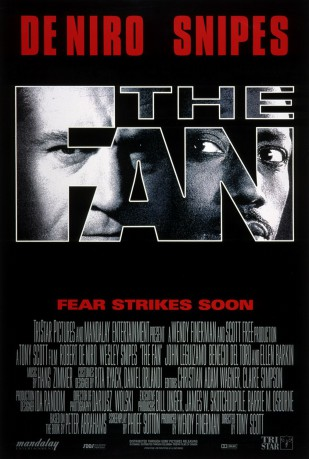
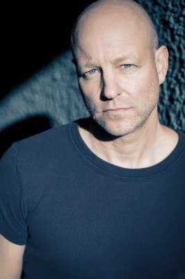
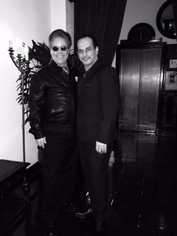

#5666 Der Fan
Alternativ: The Fan
 
 IMDB-Wertung: 5.8 / 10
IMDB-Wertung: 5.8 / 10  Metascore: 0
Metascore: 0 
Three-times MVP baseball player Bobby Rayburn joins the San Francisco Giants, and obsessive fan, whose profession is selling hunting knives, Gil Renard is excited over that. But Rayburn plays the worst season of his career and Renard tries to do everything to help him, but goes too far.
Jahr: 1996
Dauer: 116 Minuten
FSK: 12
Land: USA Studio: TriStar PicturesTonspuren: DTS - ,
Untertitel: Deutsch,
Auflösung: 1080p (1920x816) Größe: 13619 MB
Genre: Action, Thriller, Drama, Sport
Regisseur:  Tony Scott
Tony Scott
Drehbuch: Alex Haley
Soundtrack:
Darsteller:
 Robert De Niro als Gil Renard
Robert De Niro als Gil Renard Wesley Snipes als Bobby Rayburn
Wesley Snipes als Bobby Rayburn Ellen Barkin als Jewel Stern
Ellen Barkin als Jewel Stern John Leguizamo als Manny
John Leguizamo als Manny Benicio Del Toro als Juan Primo
Benicio Del Toro als Juan Primo Patti D'Arbanville als Ellen Renard
Patti D'Arbanville als Ellen Renard Chris Mulkey als Tim
Chris Mulkey als Tim- Andrew J. Ferchland als Richie Renard
 Charles Hallahan als Coop
Charles Hallahan als Coop Dan Butler als Garrity
Dan Butler als Garrity Kurt Fuller als Bernie
Kurt Fuller als Bernie Michael Jace als Scalper
Michael Jace als Scalper Frank Medrano als Leon, the Bartender
Frank Medrano als Leon, the Bartender Don S. Davis als Stook
Don S. Davis als Stook- Stoney Jackson als Zamora
 Brad William Henke als Tjader
Brad William Henke als Tjader Drew Snyder als Burrows
Drew Snyder als Burrows- Walter Addison als Detective Lewis
 Wayne Duvall als Detective Baker
Wayne Duvall als Detective Baker-  James Macdonald als Sick Sean's Dad
 Tuesday Knight als Nurse
Tuesday Knight als Nurse- Marla Sucharetza als Angie
 M.C. Gainey als Man Behind Man
M.C. Gainey als Man Behind Man Michael Bofshever als Little League Coach
Michael Bofshever als Little League Coach Kirk Ward als The Giant Mascot
Kirk Ward als The Giant Mascot Eric Bruskotter als Catcher
Eric Bruskotter als Catcher- Aaron Neville als Opening Game Singer
- Michael P. Byrne als Reporter
 Stanley DeSantis als Stoney
Stanley DeSantis als Stoney Jack Black als Broadcast Technician
Jack Black als Broadcast Technician Thomas F. Duffy als Figgy
Thomas F. Duffy als Figgy Don Fischer als Cop
Don Fischer als Cop- Chanté Moore als Primo Tribute Singer
 Paul Herman als Seedy Suit Guy
Paul Herman als Seedy Suit Guy- Carl Mergenthaler als Bobby's Teammate
 Lennox Brown als Bobby's Teammate
Lennox Brown als Bobby's Teammate Richard Riehle als Shopkeeper
Richard Riehle als Shopkeeper Earl Billings als Shopkeeper
Earl Billings als Shopkeeper John Carroll Lynch als Shopkeeper
John Carroll Lynch als Shopkeeper- Phil Aslaksen als Fan , uncredited
 Fileena Bahris als Baseball Fan , uncredited
Fileena Bahris als Baseball Fan , uncredited Greg Bronson als Baseball Fanatic , uncredited
Greg Bronson als Baseball Fanatic , uncredited- Linda Carol als Nurse , uncredited
- William Cleere als Ticket Scalper , uncredited
 Kacee DeMasi als Reporter , uncredited
Kacee DeMasi als Reporter , uncredited-  Said Faraj als Parking Attendant , uncredited
- Richard Lawrence als Baseball Player , uncredited
- Randall Rutledge als Base Ball Game Spectator , uncredited
- John Scalco als Bobby's Fan , uncredited
- Brandon Hammond als Sean Rayburn
Datei: X:\1996\Fan, Der (1996, FSK12, 1920x816).mkv seit 03.03.2017
Festplatte: HD 1996-2002
 Es gibt insgesamt 78 Filme in der Gruppe '1996'
Es gibt insgesamt 78 Filme in der Gruppe '1996'